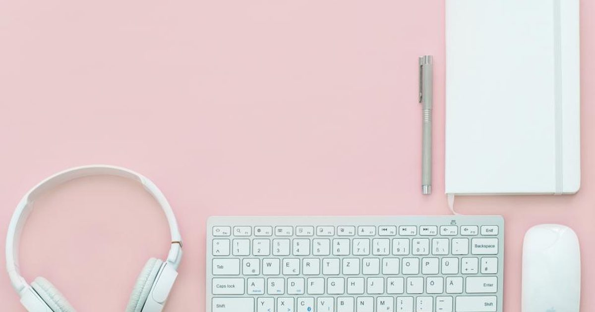

Quick Workouts & Plans
How to Structure a Home Workout (Warm-Up to Cool-Down)
Most home workouts fail on structure rather than content. The exercises are usually fine; the order, the rest and the total effort are what quietly stop it working.

You can pick six good exercises and still get very little out of them. Order them badly, rest randomly, and stop each set when it becomes uncomfortable rather than when it becomes hard, and you have a session that occupies thirty minutes without asking the body to adapt to anything.
This is the sequence that makes a bodyweight session work, and the reasoning behind each part. It applies whether you have fifteen minutes or forty — what changes is how much fits, not the order.
The anatomy of a session
Every effective home workout has the same five parts in the same order:
- Warm-up — raise temperature, move the joints you are about to load.
- Hardest or most technical work first — while you are freshest.
- Main strength work — the bulk of the session.
- Accessory or conditioning — smaller muscles, or heart rate work.
- Cool-down — bring things down, and only then stretch if you want to.
That is the whole framework. Everything below is detail on each step.
1. Warm-up: five minutes, not fifteen
A warm-up has three jobs: raise your core temperature, take the joints you are about to use through their range, and rehearse the movement patterns coming up. It does not need to be a workout of its own.
Two to three minutes of general movement — marching, easy squats, arm circles — followed by one deliberately easy set of the first exercise you are about to do. That final part is the one people skip and the one that matters most, because it is the only part specific to what you are about to load.
Static stretching before training is the notable thing to avoid holding for long. Save it for afterwards; there is a full sequence in cool-down stretches, and a complete warm-up protocol in the five-minute warm-up guide.
2. Exercise order, and why it matters
Fatigue accumulates through a session, so whatever comes first gets your best effort. Three rules follow from that, in priority order:
Most technical first
Anything requiring skill or balance — a pistol squat progression, a handstand hold, a first pull-up attempt — goes at the very start. Practising a hard skill while fatigued teaches you to do it badly.
Largest muscle groups next
Squats, lunges, push-ups, rows. These generate the most stimulus and demand the most, so they should not be competing with pre-fatigue from smaller work.
Smaller and isolation work last
Core, calves, direct arm work. If your triceps are already exhausted, your push-ups suffer. The reverse matters much less.
If a specific weak point is holding you back — say your core gives out during push-ups long before your chest does — it is reasonable to train it first for a block of weeks, accepting that the rest of the session will suffer slightly. Prioritise deliberately, not accidentally.
3. Sets, reps and how hard to go
With bodyweight training you cannot add load, so the variables you actually control are sets, proximity to failure, and how hard the exercise variation is.
Sets. Weekly volume per muscle group is what drives growth, and there is a dose-response relationship up to a point.1 Practically: two to four hard sets per movement pattern per session, two or three sessions a week.
Reps. Less important than most people assume. A review comparing low and high loads found comparable hypertrophy when sets were taken close to failure.2 Anywhere from about six to thirty repetitions works, provided the last few are genuinely hard.
Effort. This is the one that matters most in bodyweight training. Evidence comparing sets taken to failure with sets stopped short suggests you do not need to reach absolute failure on every set, but you do need to get close.3 Leaving one to three repetitions in reserve on most sets, and taking the last set of each exercise closer, is a defensible default.
If an exercise no longer lets you get close to failure in a sensible time, the answer is a harder variation rather than more repetitions. That ladder is in bodyweight exercise progressions.
4. Rest: the most commonly wasted variable
Rest gets treated as dead time to minimise. It is not — it is what allows the next set to be hard enough to matter.
| Goal | Rest | Why |
|---|---|---|
| Strength / hard progressions | 2–3 min | Enough recovery to repeat near-maximal effort |
| Muscle growth | 60–120 s | Balances per-set quality against total session time |
| Conditioning / circuits | 15–45 s | Incomplete recovery is the point |
| Skill practice | As needed | Never practise a skill tired |
The common error is using circuit-length rest for a strength goal. Thirty seconds between sets of a hard push-up progression turns a strength session into a conditioning session that happens to use push-ups.
If time is the constraint, pair exercises that do not compete — squats with push-ups, for instance — so one rests while the other works. That halves the dead time without shortening the actual recovery for either.
Rest is not the gap between the training. For everything except conditioning, it is what makes the training possible.
5. Cool-down and what it is actually for
Two or three minutes of easy movement to bring your heart rate down. That is the evidence-supported part.
Stretching afterwards is optional and worth being honest about. A Cochrane review found that stretching before or after exercise does not produce clinically important reductions in muscle soreness.4 That does not make it pointless — if you want more range of motion, stretching is how you get it, and many people simply find it pleasant. It is just not soreness insurance.
Three session templates
Fifteen minutes
90-second warm-up. One circuit of five or six movements, three rounds, 40 seconds work and 20 seconds rest. No separate cool-down beyond walking around. This is the structure used in the 15-minute full-body workout.
Thirty minutes
Five-minute warm-up. One technical or hardest movement, three sets with full rest. Then two paired supersets — a lower-body and an upper-body movement each — three sets apiece. Two minutes of core. Three-minute cool-down.
Forty-five minutes
As above, with a second technical movement at the start and an added conditioning finisher. There is a set of options in workout finishers. Beyond about forty-five minutes of bodyweight work, returns diminish quickly for most people.
What goes wrong most often
Warming up for a quarter of the session
Fifteen minutes of mobility before a thirty-minute workout is a mobility session with some exercise attached. Five minutes is enough.
Doing the fun exercises first
People front-load what they enjoy, which is usually not what they most need. Order by priority, not preference.
Never resting properly, then wondering why nothing improves
If every session is a breathless circuit, you are training conditioning exclusively, however many push-ups it contains.
Changing the structure every week
Progress needs something to compare against. Keep the structure for at least six weeks and change the difficulty of the movements within it — the approach behind the weekly schedule.
Where to go next
To see this applied across a full week, read the three-day home workout split. If you are starting from scratch, the 4-week beginner plan has it already built.
Frequently asked questions
What order should I do exercises in a home workout?
Most technical or skill-based work first, then large compound movements, then smaller isolation and core work. Fatigue accumulates through a session, so whatever comes first receives your best effort.
How long should a home workout be?
Fifteen to forty-five minutes covers almost everyone. Below fifteen it is difficult to fit enough hard sets; beyond forty-five, returns from bodyweight work diminish quickly for most people.
How long should I rest between sets at home?
Two to three minutes for hard strength work, sixty to one hundred and twenty seconds for muscle growth, and fifteen to forty-five seconds for conditioning circuits. Using circuit-length rest for a strength goal is the most common structural error.
Do I need to warm up before a bodyweight workout?
Yes, but briefly. Two to three minutes of general movement plus one deliberately easy set of your first exercise is enough. Long static stretching is better saved for after the session.
Should I stretch after a workout?
Only if you want to. A Cochrane review found stretching before or after exercise does not produce clinically important reductions in muscle soreness. It is a reasonable way to work on range of motion, but it is not soreness prevention.
How many sets should I do per exercise?
Two to four hard sets per movement pattern per session, across two or three sessions a week. Weekly volume per muscle group matters more than what any single session contains.
Sources and further reading
- Schoenfeld BJ, Ogborn D, Krieger JW. “Dose-response relationship between weekly resistance training volume and increases in muscle mass: A systematic review and meta-analysis.” Journal of Sports Sciences, 2017;35(11):1073–1082. PubMed.
- Schoenfeld BJ, Grgic J, Ogborn D, Krieger JW. “Strength and Hypertrophy Adaptations Between Low- vs. High-Load Resistance Training: A Systematic Review and Meta-analysis.” Journal of Strength and Conditioning Research, 2017;31(12):3508–3523. PubMed.
- Vieira AF, Umpierre D, Teodoro JL, et al. “Effects of Resistance Training Performed to Failure or Not to Failure on Muscle Strength, Hypertrophy, and Power Output: A Systematic Review With Meta-Analysis.” Journal of Strength and Conditioning Research, 2021. PubMed.
- Herbert RD, de Noronha M, Kamper SJ. “Stretching to prevent or reduce muscle soreness after exercise.” Cochrane Database of Systematic Reviews, 2011;(7):CD004577. PubMed.
- NHS. Physical activity guidelines for adults aged 19 to 64.
Comments
Comments are not enabled yet. Add a hosted comment embed (Disqus, Commento, Giscus) inside this container when you are ready.